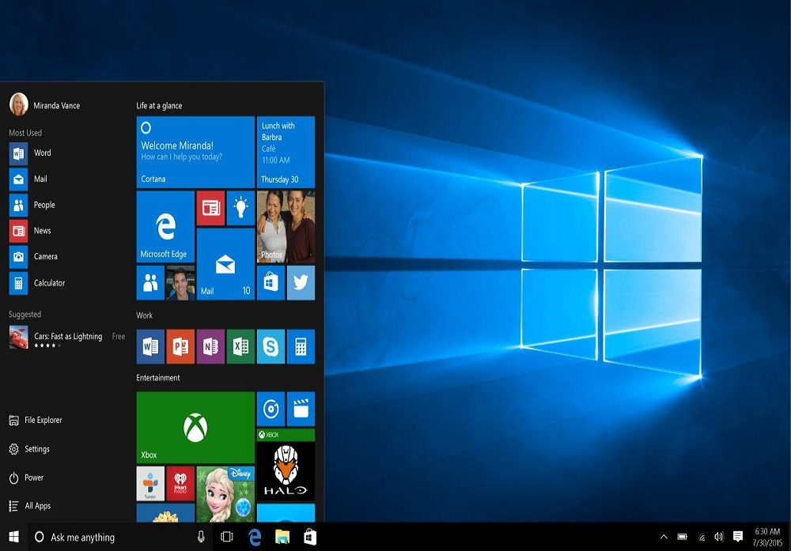

Windows
1Windows
Para muchos el mejor sistema operativo, aquí podrás saber sobre sus orígenes y demás características desde su primera versión "Windows 1.0" hasta la más actual "Windows 11" además de otros diferentes sistemas del mismo, espero disfrute de su estadía en la página estimado usuario (pronto se dará más información actualizada, mientras, disfrute de esta pequeña beta)
Windows SO


Windows 1.0
Windows 95

Windows 7

Windows 8


Windows 10

Windows 11

Windows Server


Otros
Primer y Ultimo
Windows 1.0
Primer sistema de Windows sacado el 20 de noviembre de 1985 y descontinuado el 31 de diciembre del 2001

Windows 11
La versión más reciente del sistema de Windows hasta la fecha, sacado el 5 de octubre de 2021 y aún en el mercado
Lenguajes y progamas utilizados

HTML
HyperText Markup Language

CSS
Cascading Style Sheets
VSC
Visual Studio Code